Heliocentric · Geocentric · Body-Centric Frames
Three reference frames for three different questions: where is it relative to the Sun, the Earth, or the planet you're studying?

101 · zoom in
Where is the Moon? The honest answer is "depends on where YOU are." From Earth's surface it's overhead at 1am tonight. From the Sun it's a tiny dot 1 AU away near Earth. From Mars it's an irrelevant speck. None of these answers is wrong — they're just measured from different origins. That choice of origin is what "reference frame" means.
Spaceflight juggles three of them constantly. Heliocentric (origin at the Sun) is the natural frame for cruise — everything Earth-to-Mars happens here. Geocentric (origin at Earth) is the natural frame for satellites and the Moon. Body-centric (origin at whatever planet you're flying past or orbiting) is the natural frame for arrival burns and surface ops.
Switching between them is mostly arithmetic — translate the origin, maybe rotate the axes. But it matters where you are conceptually: a transfer ellipse is heliocentric. A flyby past Mars is body-centric. The handoff between them is exactly the patched-conics trick. Every screen in this app picks a frame and sticks to it: /explore is heliocentric, /earth is geocentric, /moon and /mars are body-centric.
Heliocentric: origin at the Sun, axes aligned with the ecliptic. The natural frame for solar-system motion. Planet positions, transfer orbits, mission cruises — all most naturally described here. Orrery's `/explore` is fundamentally heliocentric.
Geocentric: origin at Earth. Useful for satellites, the Moon, and any spacecraft inside Earth's sphere of influence. Earth's `/earth` route works in this frame. Geocentric coordinates relate to heliocentric by a translation (Earth's heliocentric position) and possibly a rotation (Earth's axial tilt).
Body-centric (Mars-centric, Saturn-centric, Moon-centric, etc.): origin at the body you're orbiting or flying past. Used for orbit insertion, surface ops, flyby geometry — anything where the body's gravity dominates. Patched-conic mission design switches frames at sphere-of-influence boundaries: you describe an arc in whatever frame keeps the math local.
SEE IN THE APP
- /fly Heliocentric vs body-centric frames switch at sphere-of-influence